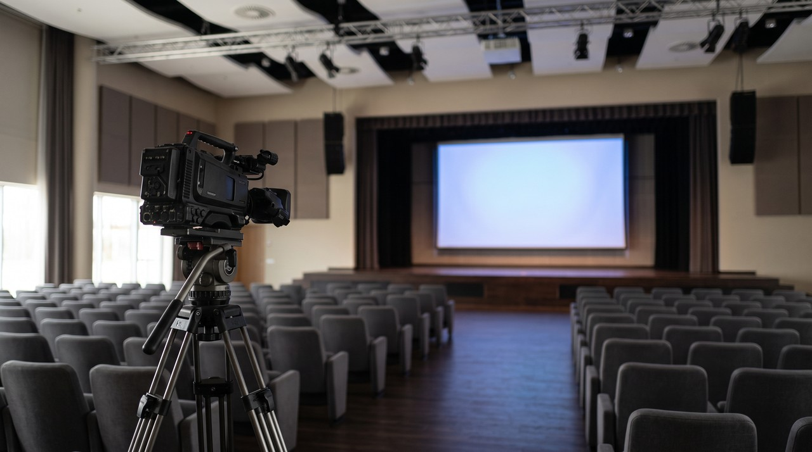
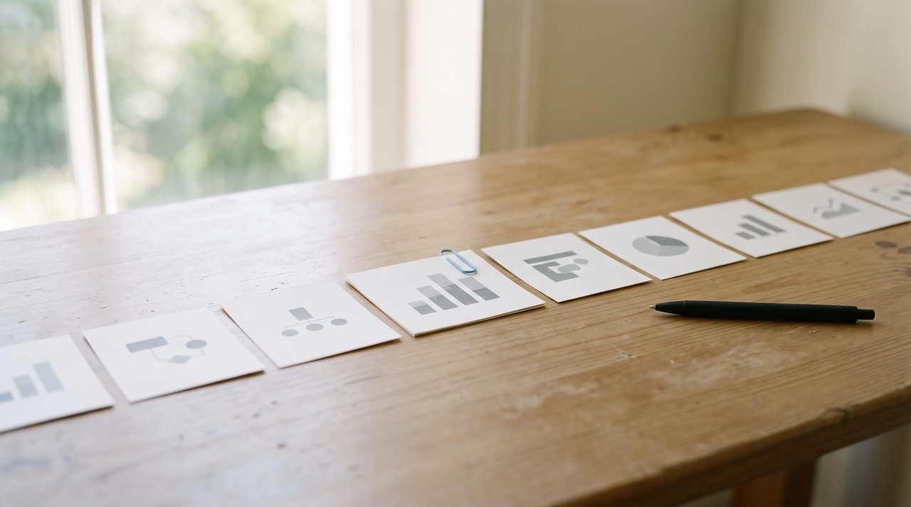

How to turn a conference talk recording into notes you can actually cite
Pull two things from the recording: the spoken words as a transcript with timestamps, and pictures of the screen so you keep every slide. Put them side by side, and each point in your notes gets the exact minute it was said. Then you can quote the talk in your write-up as (Speaker, Year, 12:40). Anyone reading it can go check the exact moment.
You watch a good talk at an event or later on YouTube, and then you want to write about it. The main idea stays with you. What you forget is the exact number on a specific slide or the minute the speaker said the thing you want to quote. So you scrub through a 45 minute video looking for it, and this is where most write-ups about talks go wrong.
The fix is to turn the recording into notes where every point has its minute next to it. Then quoting the talk means copying a line instead of rewatching the whole video. A reader who doubts you can also jump to that exact moment and hear it for themselves.
A bit of background helps here, because a conference recording is different from a normal lecture or a webinar. An event crew films it with more than one camera. The director keeps cutting between a wide shot of the stage, a close shot of the speaker and the slides full screen. Sometimes the slides just sit in a small box in the corner. So the slide you need might only stay on screen for a few seconds before the camera goes back to the speaker's face.
What should notes from a conference talk actually have in them?
Most tips about taking notes tell you to write down the main points and skip the rest. That is fine if you just want to remember things. But you need to keep three things together if you are going to quote the talk in a blog post, a report or a paper. You need what the person said, what they showed, and when they said it.
| What you need later | Where it lives in the recording | How you get it out |
|---|---|---|
| An exact quote | The audio | A transcript with timestamps |
| A number or chart on a slide | The screen, often for a few seconds | Pictures of the screen, taken often |
| The minute it happened | The video's timeline | Timestamps kept on both of the above |
| Speaker, event and year | The video title and description | Copy it once, by hand |
The part about what they showed is what catches people out. Speakers put their real evidence on their slides, like the benchmark, the survey result, or the before and after state. They just talk around those things. So a transcript alone gives you the story, but it leaves out all the numbers.
Is there a free way to get notes from a recorded talk?
You should check if the speaker already shared the slides before you extract anything yourself. Many speakers upload their deck to the event page, to Speaker Deck, to SlideShare, or they link it in the video description. Download the deck if it is out there, and you already have every slide at full quality.
You can get the words easily if the talk is on YouTube. Open the video, click the three dots under it and choose Show transcript. Copy that whole panel into a document and all the timestamps come with it. To point someone at one exact moment, click Share, tick Start at and type the time. YouTube explains this in their own help page on sharing videos.
There is a limit to this method. The deck is often never published, and auto captions get names and technical terms wrong. The slides you see only for a few seconds are also missing from the transcript. You can pause and take a screenshot each time a slide appears, and that is honestly fine for one short talk. It is just too much work for a whole day of talks.
Why is it so hard to get the slides out of a conference video?

This happens because of the camera cuts. When I watch a telecom conference talk on YouTube, the number I want is almost always on a slide that was full screen for ten seconds. The camera then stays on the speaker for the other two minutes. You can miss that slide completely if you only take one picture every few seconds.
So you have to take the pictures often. VideoDoc takes 4 pictures a second by default. This is close enough together that nothing can appear on screen and vanish between two of them. The tool then skips any picture that is a 100% pixel for pixel copy of the one right before it.
The speaker is usually moving on a filmed talk, so almost no two frames are exact copies. That means not much gets skipped. For a 40 minute talk at 4 a second, that is about 9,600 images. You can use 1 a second if the slides in your talk stay up for a while each time, and that gives you a quarter of that number.
How do I turn the recording into notes with the minute on every point?

- Paste the talk's link into VideoDoc, or drop in the file if you have the recording, and choose A document for AI. It runs on your own computer, and you get a PDF and a Markdown file with the timestamped transcript and pictures of the screen.
- Open the PDF and find the slide you want. The picture sits next to the words the speaker was saying at that moment, with the time on it.
- Hand the Markdown file to ChatGPT or Claude and ask for every claim the speaker made, one line each, with its timestamp and the slide it goes with.
- Before you publish, open the video at each timestamp you are going to quote and listen to it. The transcript is a machine's guess at the words, and a quote in your write-up should be what the speaker really said.
You can choose Every frame as images instead if you only want the slides and not the words. Each picture is named by its moment, like frame_000123_00h01m45.50s.jpg. A CSV file also lists every image with its time, so you can find the slide and its minute in just one step.
How do I cite the exact minute of a talk in a write-up?
In APA style, the reference at the end names the uploader, the date, and the title with [Video]. It also lists YouTube and the link. You add the timestamp after the year when you quote the talk in your text, like (Smith, 2018, 5:27). The East Carolina University library guide to APA 7 shows how to do this.
Put the minute next to every quote, and link to that minute when you can. A Start at link from YouTube takes the reader straight to the moment in a blog post. The timestamp in brackets does the same job in a paper, and your notes already have it written down.
VideoDoc works on public videos. A talk locked behind an event's paid login is not one it can fetch for you. The pictures of the slides are small too when the slides only show up in a small box in the corner, and fine print can be hard to read. No tool can get a slide back if the camera never showed it. The transcript can mishear names, product names and jargon, so you need to check every quote against the video. And remember that you get pictures of the slides, not an editable deck.
Try it on a talk you already watched.
Try it free in your browser on a file you already have. Pro is $19 once, lifetime, 2 machines, and it runs on Windows and Apple Silicon Macs.
Quick questions
How do I take notes from a recorded conference talk?
Get a transcript with timestamps and pictures of the screen. Then write your notes on top of them. That way every point keeps the minute it was said and the exact slide that went with it.
How do I get the slides from a conference talk video?
First check the event page, the video description, Speaker Deck and SlideShare. Many speakers publish the deck on those sites. If they did not, take pictures of the video often enough to catch a slide that was only on screen for a few seconds. This is why VideoDoc samples 4 a second by default.
How do I cite a YouTube talk with a timestamp?
In APA 7 you put the timestamp after the year in the in-text citation, like (Smith, 2018, 5:27). You do not put the timestamp in the reference list at the end.
Can I trust an AI summary of a conference talk?
You can use it to find things, but do not use it to quote from. Ask the AI to list claims with their timestamps. Then check each one against the video at that minute before you publish it.
Pick the one talk you keep meaning to write about. Turn it into notes tonight, and put the minute next to the first quote.

I am a telecom engineer and business analyst from Pakistan, and I build small honest desktop tools under Designesh. I made VideoDoc because I wanted my AI to read the lectures I study from. Everything here is tested on my own machine first.